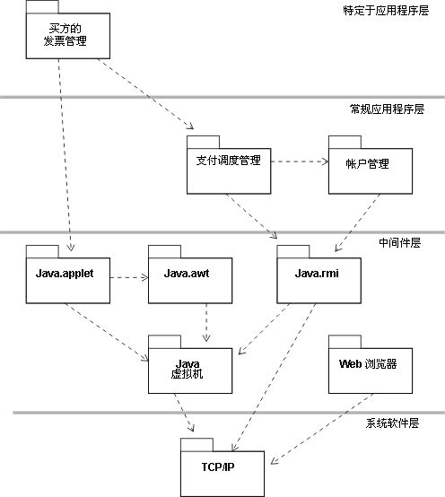

|
目的
|
说明设计模型组织中的新模型元素。
在必要时重新平衡设计模型的结构。
|
当新元素已添加到设计模型中时，通常需要重新封装设计模型的元素。重新封装实现了几个目标：在设计模型中，减少包之间的耦合度并提高包内的内聚性。最终目标是允许不同的人员或团队相互独立设计和开发不同的包（和子系统）。
虽然完全独立可能无法实现，但包之间松散的耦合度往往会使大型或复杂系统的开发更轻松。
“平面”模型结构（其中所有包和子系统驻留在系统的相同概念级别）适合于小型系统；更大型系统需要称为“分层”的附加构造工具（请参阅工作产品指南：分层）。
分层规则定义某些类型的包之间所允许的关系的限制。这些规则识别不应存在的某些依赖关系：应用程序功能不应直接依赖特定操作系统或窗口系统服务 － 应该存在包含逻辑操作系统和窗口服务的中间层，该层使应用程序功能与低级实施服务中的变更相隔绝。
分层提供了减少变更影响的一种方法：通过强加限制包和子系统之间的依赖关系的规则，减少包和子系统之间的耦合程度，使系统变得更健壮。并能容忍变更。
当向系统添加新模型元素时，现有的包可能增长得太大以致无法由单个团队管理：必须将这个包分割成包内高度内聚但包间松散耦合的几个包。这样做可能很困难 －
一些元素可能很难放置在一个特定包中，因为两个包的元素都要使用这些元素。有两种可能的解决方案：将该元素分割成几个对象，每个包中一个（当该元素具有几种“特性”或多组在某种程度上分离的职责时，这样做很有效），或者将该元素移进更低层的某个包中，这样所有更高层元素都可以平等地依赖它。
当系统复杂性增加时，将需要更多的层，以便具有可维护和可理解的结构。但是，超过 7－10 层甚至在最大型系统中也是罕见的，因为随着层数的增加，复杂性会增加，而可理解性会降低。
分层的示例（包括中间件和系统软件层）如下所示：

基于 Java/Web 的应用程序的示例包分层。 注意：TCP/IP 包上的依赖关系通常不显式建模，因为 TCP/IP 服务的使用封装在 Java VM、java.rmi 和 Web 浏览器中。在此描述它们只是为了说明。
将子系统和各层的职责分配给个人或团队。每个包或子系统应是个人（如果范围很小）或团队（如果范围很大）的职责。
|